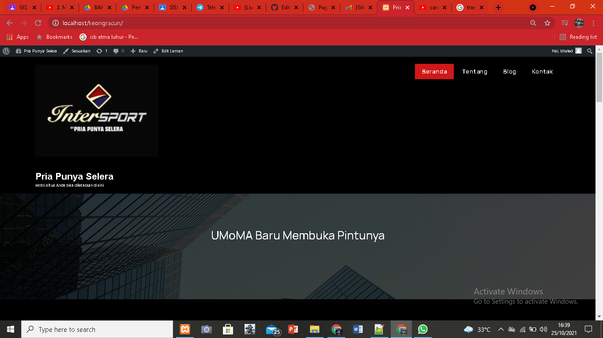
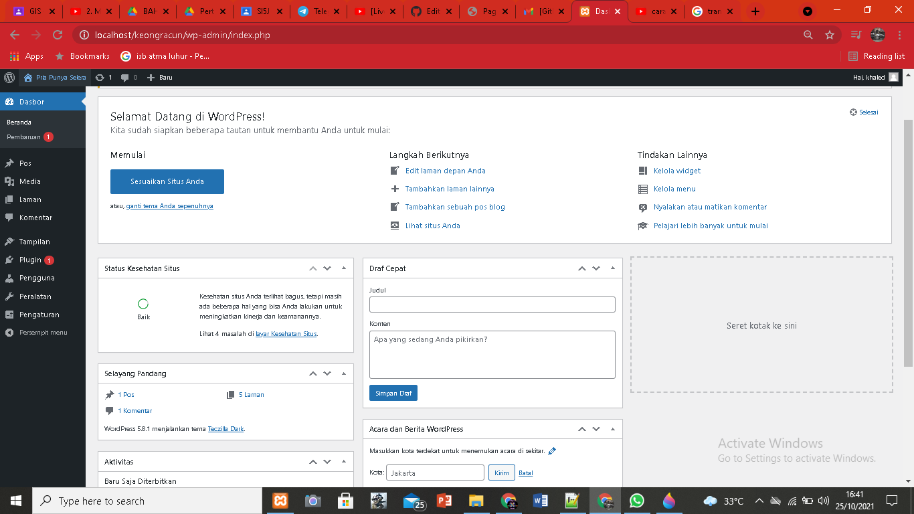
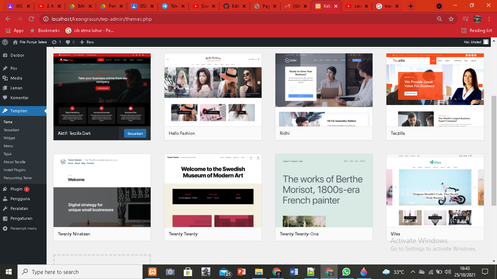

kesimpulan atau hasil pertemuan 2 yang saya ambil adalah:
- di dalam htdocs, harus ada folder keongracun, sehingga pada browser bisa diakses dengan http://localhost/keongracun
- jika object not found (404), maka cek dulu nama folder antara htdocs dengan yang diketik di localhost
- jika ada tulisan error establishing database connection, cek dulu apakah mysql sudah running pada xampp control panel
- jika sudah running, buka wp-config.php pada folder keongracun, dan cek db_name. db name ini pastikan ada di phpmyadmin
- jika pada phpmyadmin belum ada nama databasenya, maka import dulu file sql bahan pertemuan ke 2 (hasil pertemuan ke 1)
- wordpress memiliki 2 sisi, 1 tampilan backend (untuk admin/dashboard) dan 1 nya lagi tampilan front end (untuk pengunjung/client area)
- untuk backend, harus login dulu di alamat http://localhost/keongracun/wp-admin
Berikut tampilan halaman beranda web (web pengunjung):

Berikut tampilan dashboard admin:

Berikut tampilan menu untuk menyesuaikan tema, dll:
